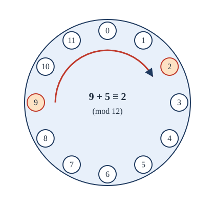

Chapter 10: Number Theory and Cryptography¶
Divisibility, primes, modular arithmetic and the RSA cryptosystem
Learning outcomes
After this chapter you should be able to:
- use divisibility, the division algorithm and the fundamental theorem of arithmetic;
- compute greatest common divisors with Euclid's algorithm, and express them as integer combinations with the extended algorithm;
- calculate in modular arithmetic, including fast modular exponentiation;
- solve linear congruences with modular inverses, and systems of congruences with the Chinese remainder theorem;
- state and use Fermat's little theorem and Euler's theorem;
- explain how RSA keys are made, how messages are encrypted and decrypted, why decryption works, and what its security rests on.
10.1 Divisibility¶
Number theory is the study of the integers. For centuries it was admired as the purest of mathematics, with no practical use. Today it secures every online payment. This chapter covers the number theory needed for that application.
Recall from Chapter 3 that \(a \mid b\) ("\(a\) divides \(b\)") means \(b = ak\) for some integer \(k\), for \(a \ne 0\). Then \(a\) is a factor or divisor of \(b\), and \(b\) is a multiple of \(a\).
Theorem 10.1 (properties of divisibility)
For integers \(a, b, c\) with \(a \ne 0\):
- if \(a \mid b\) and \(a \mid c\), then \(a \mid (b + c)\);
- if \(a \mid b\), then \(a \mid bc\) for every integer \(c\);
- if \(a \mid b\) and \(b \mid c\) (with \(b \ne 0\)), then \(a \mid c\);
- if \(a \mid b\) and \(a \mid c\), then \(a \mid (sb + tc)\) for all integers \(s, t\).
The proofs are one line each, by the definition (Example 3.2 and Exercise 3.2). Property 4 is the one used most.
The division algorithm (Theorem 6.1) says that for an integer \(a\) and a positive integer \(d\) there are unique integers \(q\) (the quotient) and \(r\) (the remainder) with
We write \(q = a \;\mathrm{div}\; d = \lfloor a/d \rfloor\) and \(r = a \bmod d\). For example, \(101 = 11 \cdot 9 + 2\), so \(101 \bmod 11 = 2\); and \(-11 = 3 \cdot (-4) + 1\), so \(-11 \bmod 3 = 1\).
Representing integers in any base¶
The division algorithm also explains positional notation. For an integer \(b > 1\), every positive integer \(n\) can be written uniquely as \(n = a_k b^k + \dots + a_1 b + a_0\) with digits \(0 \le a_i < b\) and \(a_k \ne 0\). The last digit is \(a_0 = n \bmod b\), and the others are the digits of \(n \;\mathrm{div}\; b\). So repeated division gives the digits from right to left: \(241 = 2 \cdot 120 + 1\), \(120 = 2 \cdot 60 + 0\), \(60 = 2 \cdot 30 + 0\), \(30 = 2 \cdot 15 + 0\), \(15 = 2 \cdot 7 + 1\), \(7 = 2 \cdot 3 + 1\), \(3 = 2 \cdot 1 + 1\), \(1 = 2 \cdot 0 + 1\), so \(241 = (11110001)_2\). Computers use base 2 (binary) and, for humans reading binary, base 16 (hexadecimal): \((11110001)_2 = (\mathrm{F1})_{16}\).
10.2 Primes¶
Recall that an integer \(p > 1\) is prime if its only positive divisors are \(1\) and \(p\). The primes below 50 are
We have proved that every integer \(n \ge 2\) is a product of primes (Example 6.6) and that there are infinitely many primes (Example 3.7). The factorisation is also unique, which we prove in Section 10.4.
Theorem 10.2 (the fundamental theorem of arithmetic)
Every integer \(n \ge 2\) can be written as a product of primes, \(n = p_1 p_2 \cdots p_k\) with \(p_1 \le p_2 \le \dots \le p_k\), in exactly one way.
For example, \(360 = 2 \cdot 2 \cdot 2 \cdot 3 \cdot 3 \cdot 5 = 2^3 \cdot 3^2 \cdot 5\).
Finding primes¶
To test whether \(n\) is prime, it is enough to try dividing by the primes up to \(\sqrt{n}\): if \(n = ab\) with \(1 < a \le b\), then \(a \le \sqrt{n}\) (Example 3.5), and any prime factor of \(a\) divides \(n\). To show 101 is prime, try 2, 3, 5 and 7 (since \(11^2 = 121 > 101\)); none divides it.
To list all primes up to \(N\), the sieve of Eratosthenes is far faster. Write the numbers from 2 to \(N\). The first number not crossed out, 2, is prime; cross out its multiples. The next uncrossed number, 3, is prime; cross out its multiples. Continue. Once the current prime exceeds \(\sqrt{N}\), every number left is prime.
Primes thin out but never stop. The prime number theorem (proved in 1896) says that the number of primes up to \(x\) is approximately \(x/\ln x\), so a randomly chosen number near \(x\) is prime with probability about \(1/\ln x\). Near \(10^{300}\), about one number in 700 is prime: large primes are plentiful, which RSA depends on.
Testing primality is easy; factoring is hard
There are fast algorithms that decide whether a number with hundreds of digits is prime, without finding any factor. But no fast method is known for factoring a large number that is the product of two large primes. The security of RSA rests on this difference.
10.3 Greatest common divisors and Euclid's algorithm¶
Definitions: gcd and lcm
For integers \(a\) and \(b\), not both zero, the greatest common divisor \(\gcd(a, b)\) is the largest integer that divides both. Integers with \(\gcd(a, b) = 1\) are relatively prime (or coprime). For positive \(a\) and \(b\), the least common multiple \(\mathrm{lcm}(a, b)\) is the smallest positive integer divisible by both.
With prime factorisations, \(\gcd\) takes the smaller power of each prime and \(\mathrm{lcm}\) the larger: for \(120 = 2^3 \cdot 3 \cdot 5\) and \(500 = 2^2 \cdot 5^3\), \(\gcd = 2^2 \cdot 5 = 20\) and \(\mathrm{lcm} = 2^3 \cdot 3 \cdot 5^3 = 3000\). Since \(\min(x, y) + \max(x, y) = x + y\), it follows that \(\gcd(a, b) \cdot \mathrm{lcm}(a, b) = ab\).
But factoring is hard, so this is not how gcds are computed. Euclid's algorithm, over two thousand years old, is much faster and needs no factoring. It rests on one lemma.
Lemma 10.3
If \(a = bq + r\), then \(\gcd(a, b) = \gcd(b, r)\).
Proof. If \(d\) divides \(a\) and \(b\), then \(d\) divides \(r = a - bq\) (Theorem 10.1(4)). If \(d\) divides \(b\) and \(r\), then \(d\) divides \(a = bq + r\). So \(a, b\) and \(b, r\) have exactly the same common divisors, hence the same greatest one. \(\blacksquare\)
Euclid's algorithm. To find \(\gcd(a, b)\) with \(a \ge b > 0\): divide \(a\) by \(b\) to get remainder \(r\); replace \((a, b)\) by \((b, r)\); repeat until the remainder is \(0\). The last non-zero remainder is the gcd. The remainders strictly decrease and stay non-negative, so the algorithm stops; by Lemma 10.3 the gcd never changes, and \(\gcd(g, 0) = g\).
Example 10.1: Euclid's algorithm
Problem. Find \(\gcd(252, 198)\).
Solution.
The last non-zero remainder is \(18\), so \(\gcd(252, 198) = 18\).
Euclid's algorithm is fast: one can prove (Lamé's theorem) that the number of divisions is at most five times the number of decimal digits of the smaller number. A gcd of two 300-digit numbers needs at most about 1,500 divisions.
def gcd(a, b):
while b != 0:
a, b = b, a % b
return a
print(gcd(252, 198)) # 18
10.4 Bézout's identity and unique factorisation¶
Running Euclid's algorithm backwards shows that the gcd is a combination of the two numbers.
Theorem 10.4 (Bézout's identity)
For integers \(a\) and \(b\), not both zero, there are integers \(s\) and \(t\) with \(\gcd(a, b) = sa + tb\).
Proof. Let \(S = \{sa + tb : s, t \in \mathbb{Z}\}\) and let \(g\) be the smallest positive element of \(S\) (it exists by well-ordering, since \(S\) contains \(\lvert a \rvert\) or \(\lvert b \rvert\)). Write \(a = gq + r\) with \(0 \le r < g\). Then \(r = a - q(sa + tb) = (1 - qs)a + (-qt)b\) is in \(S\), and \(r < g\), so \(r\) cannot be positive: \(r = 0\) and \(g \mid a\). In the same way \(g \mid b\). And any common divisor of \(a\) and \(b\) divides \(sa + tb = g\), so is at most \(g\). Hence \(g = \gcd(a, b)\). \(\blacksquare\)
The proof shows that \(s\) and \(t\) exist; the extended Euclidean algorithm finds them, by substituting back through the steps of Euclid's algorithm.
Example 10.2: The extended Euclidean algorithm
Problem. Find integers \(s, t\) with \(18 = 252s + 198t\).
Solution. From Example 10.1, solve each line for its remainder: \(54 = 252 - 198\), \(36 = 198 - 3 \cdot 54\), \(18 = 54 - 36\). Now substitute from the bottom up:
So \(s = 4\), \(t = -5\). Check: \(1008 - 990 = 18\).
The same computation can be organised as a recursive program:
def extended_gcd(a, b):
"""Return (g, s, t) with g = gcd(a, b) = s*a + t*b."""
if b == 0:
return a, 1, 0
g, s, t = extended_gcd(b, a % b)
return g, t, s - (a // b) * t
print(extended_gcd(252, 198)) # (18, 4, -5)
Bézout's identity gives the key fact about primes.
Lemma 10.5 (Euclid's lemma)
If \(p\) is prime and \(p \mid ab\), then \(p \mid a\) or \(p \mid b\). More generally, if \(\gcd(a, b) = 1\) and \(a \mid bc\), then \(a \mid c\).
Proof. For the general form: by Bézout, \(1 = sa + tb\). Multiply by \(c\): \(c = sac + tbc\). Now \(a \mid sac\), and \(a \mid tbc\) because \(a \mid bc\). So \(a \mid c\). For the prime case: if \(p \nmid a\), then \(\gcd(p, a) = 1\) (the only positive divisors of \(p\) are 1 and \(p\)), so \(p \mid b\). \(\blacksquare\)
Proof of uniqueness in Theorem 10.2. Suppose some integer has two different prime factorisations, \(p_1 \cdots p_k = q_1 \cdots q_m\). Cancel the primes common to both sides; what remains is an equation of the same form with no prime on both sides (both sides cannot become empty, since the factorisations were different). Then \(p_1\) divides \(q_1 \cdots q_m\), and by repeated use of Euclid's lemma, \(p_1\) divides some \(q_j\); since \(q_j\) is prime, \(p_1 = q_j\), contradicting that no prime is on both sides. \(\blacksquare\)
Euclid's lemma needs a prime
\(6 \mid 4 \cdot 9\) but \(6 \nmid 4\) and \(6 \nmid 9\). The lemma holds for primes, or for \(a\) coprime to \(b\), and not in general.
10.5 Modular arithmetic¶
Clocks do arithmetic modulo 12: nine o'clock plus five hours is two o'clock. Section 5.4 defined congruence: \(a \equiv b \pmod{m}\) when \(m \mid (a - b)\). Equivalently, \(a\) and \(b\) have the same remainder on division by \(m\): \(a \equiv b \pmod m\) if and only if \(a \bmod m = b \bmod m\).

Congruences can be added and multiplied like equations.
Theorem 10.6
If \(a \equiv b \pmod{m}\) and \(c \equiv d \pmod{m}\), then \(a + c \equiv b + d \pmod{m}\) and \(ac \equiv bd \pmod{m}\).
Proof. Write \(a = b + km\) and \(c = d + \ell m\). Then \(a + c = (b + d) + (k + \ell)m\) and \(ac = bd + (b\ell + dk + k\ell m)m\). \(\blacksquare\)
So in a long calculation modulo \(m\), we may reduce modulo \(m\) at every step, which keeps the numbers small. The set \(\mathbb{Z}_m = \{0, 1, \dots, m-1\}\) with addition and multiplication modulo \(m\) is the integers modulo \(m\); it obeys the usual laws of arithmetic (commutative, associative, distributive, with \(0\) and \(1\) as identities).
You cannot always divide
\(14 \equiv 8 \pmod 6\), but dividing both sides by 2 gives \(7 \equiv 4 \pmod 6\), which is false. Division modulo \(m\) is possible only by numbers coprime to \(m\) (Section 10.6).
Example 10.3: Last digits
Problem. What is the last digit of \(7^{2026}\)?
Solution. We need \(7^{2026} \bmod 10\). The powers of 7 modulo 10 are \(7, 9, 3, 1, 7, 9, 3, 1, \dots\) (since \(7^4 = 2401 \equiv 1\)). Because \(2026 = 4 \cdot 506 + 2\), \(7^{2026} = (7^4)^{506} \cdot 7^2 \equiv 1 \cdot 49 \equiv 9 \pmod{10}\). The last digit is 9.
Fast modular exponentiation¶
Cryptography needs \(b^e \bmod m\) for numbers with hundreds of digits. Multiplying \(b\) by itself \(e - 1\) times is impossible, but repeated squaring needs only about \(2\log_2 e\) multiplications. Write \(e\) in binary; compute \(b, b^2, b^4, b^8, \dots\) modulo \(m\) by squaring; multiply together the powers corresponding to the 1 bits of \(e\).
Example 10.4: Repeated squaring
Problem. Compute \(7^{13} \bmod 11\).
Solution. \(13 = (1101)_2 = 8 + 4 + 1\). Squaring modulo 11: \(7^1 \equiv 7\), \(7^2 = 49 \equiv 5\), \(7^4 \equiv 5^2 = 25 \equiv 3\), \(7^8 \equiv 3^2 = 9\). So \(7^{13} = 7^8 \cdot 7^4 \cdot 7^1 \equiv 9 \cdot 3 \cdot 7 = 189 \equiv 2 \pmod{11}\).
def power_mod(b, e, m):
result = 1
b = b % m
while e > 0:
if e % 2 == 1: # the current binary digit of e is 1
result = (result * b) % m
b = (b * b) % m # square for the next binary digit
e = e // 2
return result
print(power_mod(7, 13, 11), power_mod(3, 200, 13)) # 2 9
Python's built-in pow(b, e, m) does the same thing.
10.6 Inverses, linear congruences and the Chinese remainder theorem¶
To solve \(3x \equiv 4 \pmod 7\), we would like to divide by 3. Modulo 7, "dividing by 3" means multiplying by a number \(\bar{3}\) with \(3\bar{3} \equiv 1\); trying values, \(3 \cdot 5 = 15 \equiv 1\), so \(\bar{3} = 5\). Then \(x \equiv 5 \cdot 4 = 20 \equiv 6 \pmod 7\). Check: \(3 \cdot 6 = 18 \equiv 4\).
Theorem 10.7 (modular inverses)
If \(\gcd(a, m) = 1\) and \(m > 1\), there is an integer \(\bar{a}\), unique modulo \(m\), with \(a\bar{a} \equiv 1 \pmod{m}\); it is called an inverse of \(a\) modulo \(m\). If \(\gcd(a, m) > 1\), no inverse exists.
Proof. By Bézout, \(1 = sa + tm\) for some \(s, t\), so \(sa \equiv 1 \pmod{m}\): take \(\bar{a} = s\). If \(\bar{a}\) and \(\bar{a}'\) are both inverses, then \(\bar{a} \equiv \bar{a}(a\bar{a}') = (\bar{a}a)\bar{a}' \equiv \bar{a}' \pmod m\). If \(d = \gcd(a, m) > 1\) and \(ax \equiv 1\), then \(ax - 1 = km\), and \(d\) divides \(ax - km = 1\), which is impossible. \(\blacksquare\)
Example 10.5: An inverse by the extended algorithm
Problem. Find the inverse of 17 modulo 60, and solve \(17x \equiv 5 \pmod{60}\).
Solution. Euclid: \(60 = 3 \cdot 17 + 9\), \(17 = 1 \cdot 9 + 8\), \(9 = 1 \cdot 8 + 1\). Back-substitute: \(1 = 9 - 8 = 9 - (17 - 9) = 2 \cdot 9 - 17 = 2(60 - 3 \cdot 17) - 17 = 2 \cdot 60 - 7 \cdot 17\). So \(-7 \cdot 17 \equiv 1\), and the inverse is \(-7 \equiv 53 \pmod{60}\). Check: \(17 \cdot 53 = 901 = 15 \cdot 60 + 1\). Then \(x \equiv 53 \cdot 5 = 265 \equiv 25 \pmod{60}\). Check: \(17 \cdot 25 = 425 = 7 \cdot 60 + 5\).
In particular, when \(p\) is prime every non-zero element of \(\mathbb{Z}_p\) has an inverse, so \(\mathbb{Z}_p\) is a field: one can add, subtract, multiply and divide (by non-zero elements), just as with rational numbers.
The Chinese remainder theorem¶
An ancient Chinese mathematical text poses the problem: find a number that leaves remainder 2 when divided by 3, remainder 3 when divided by 5, and remainder 2 when divided by 7.
Theorem 10.8 (the Chinese remainder theorem)
Let \(m_1, \dots, m_n\) be pairwise relatively prime positive integers and \(m = m_1 m_2 \cdots m_n\). For any integers \(a_1, \dots, a_n\), the system
has a solution, and any two solutions are congruent modulo \(m\).
Proof. Existence. Let \(M_k = m/m_k\), the product of all the moduli except \(m_k\). Since the \(m_i\) are pairwise coprime, \(\gcd(M_k, m_k) = 1\), so \(M_k\) has an inverse \(y_k\) modulo \(m_k\). Let
For each \(k\), every term except the \(k\)-th is divisible by \(m_k\) (because \(M_j\) contains the factor \(m_k\) for \(j \ne k\)), and the \(k\)-th term is \(a_k M_k y_k \equiv a_k \cdot 1 \pmod{m_k}\). So \(x \equiv a_k \pmod{m_k}\) for every \(k\).
Uniqueness. If \(x\) and \(x'\) are solutions, each \(m_k\) divides \(x - x'\); since the \(m_k\) are pairwise coprime, their product \(m\) divides \(x - x'\) (by repeated use of Lemma 10.5). \(\blacksquare\)
Example 10.6: Solving the ancient problem
Problem. Solve \(x \equiv 2 \pmod 3\), \(x \equiv 3 \pmod 5\), \(x \equiv 2 \pmod 7\).
Solution. \(m = 105\); \(M_1 = 35\), \(M_2 = 21\), \(M_3 = 15\). Inverses: \(35 \equiv 2 \pmod 3\), inverse \(y_1 = 2\) (as \(2 \cdot 2 = 4 \equiv 1\)); \(21 \equiv 1 \pmod 5\), \(y_2 = 1\); \(15 \equiv 1 \pmod 7\), \(y_3 = 1\). So
Check: \(23 = 3 \cdot 7 + 2 = 5 \cdot 4 + 3 = 7 \cdot 3 + 2\). The solutions are \(23, 128, 233, \dots\)
The theorem says that a number modulo \(m\) is the same as its list of remainders modulo \(m_1, \dots, m_n\). Computers use this to do arithmetic with huge numbers as several independent computations with small ones.
10.7 Fermat's little theorem¶
Theorem 10.9 (Fermat's little theorem)
If \(p\) is prime and \(p \nmid a\), then
Consequently \(a^p \equiv a \pmod p\) for every integer \(a\).
Proof. Consider the \(p - 1\) numbers \(a, 2a, 3a, \dots, (p-1)a\) modulo \(p\). None is \(0\), because \(p \nmid ka\) for \(1 \le k \le p - 1\) (Euclid's lemma). No two are congruent: if \(ia \equiv ja\), then multiplying by the inverse of \(a\) gives \(i \equiv j\), so \(i = j\). So these numbers are \(1, 2, \dots, p - 1\) in some order, and their products agree:
Since \((p-1)!\) is coprime to \(p\), we may cancel it (multiply by its inverse), giving \(a^{p-1} \equiv 1\). For the consequence: if \(p \nmid a\), multiply by \(a\); if \(p \mid a\), both sides are \(0\). \(\blacksquare\)
Example 10.7: Using Fermat's little theorem
Problem. Find \(3^{200} \bmod 13\).
Solution. By Fermat, \(3^{12} \equiv 1 \pmod{13}\). Since \(200 = 12 \cdot 16 + 8\), \(3^{200} \equiv 3^8 = 6561\). And \(6561 = 13 \cdot 504 + 9\), so \(3^{200} \equiv 9 \pmod{13}\).
Fermat's theorem gives a quick test that can prove a number composite: if \(a^{n-1} \not\equiv 1 \pmod n\) for some \(a\) coprime to \(n\), then \(n\) is not prime. (For \(n = 15\), \(2^{14} = 16384 \equiv 4 \pmod{15}\), so 15 is composite.) Refinements of this idea, such as the Miller-Rabin test, are how large primes are found in practice.
Euler's theorem¶
For a composite modulus the right generalisation uses Euler's function \(\varphi(n)\), the number of integers in \(\{1, 2, \dots, n\}\) that are coprime to \(n\). For a prime \(p\), \(\varphi(p) = p - 1\). For two distinct primes \(p\) and \(q\),
because among \(1, \dots, pq\) the multiples of \(p\) (\(q\) of them) and the multiples of \(q\) (\(p\) of them) share only \(pq\) itself, so \(pq - q - p + 1 = (p-1)(q-1)\) numbers remain (inclusion-exclusion).
Theorem 10.10 (Euler's theorem)
If \(\gcd(a, n) = 1\), then \(a^{\varphi(n)} \equiv 1 \pmod{n}\).
The proof is the same as for Fermat's theorem, using the \(\varphi(n)\) numbers coprime to \(n\) in place of \(1, \dots, p - 1\).
10.8 The RSA cryptosystem¶
In a classical cipher the sender and receiver share a secret key, which must somehow be agreed in advance. In 1976 Diffie and Hellman proposed public-key cryptography, in which each person has two keys: a public key, published for anyone to use for encrypting messages to them, and a private key, kept secret, for decrypting. In 1977 Rivest, Shamir and Adleman found a practical way to do it, now called RSA. (A similar system had been found a few years earlier by Clifford Cocks at the British intelligence agency GCHQ, but this was kept secret until 1997.)
How RSA works¶
Making keys. The receiver, Asha:
- chooses two large distinct primes \(p\) and \(q\) (hundreds of digits each) and computes \(n = pq\);
- computes \(\varphi(n) = (p - 1)(q - 1)\);
- chooses an exponent \(e\) with \(1 < e < \varphi(n)\) and \(\gcd(e, \varphi(n)) = 1\);
- computes \(d\), the inverse of \(e\) modulo \(\varphi(n)\), with the extended Euclidean algorithm.
The public key is \((n, e)\). The private key is \(d\) (and \(p\), \(q\) and \(\varphi(n)\) are kept secret, or destroyed).
Encrypting. A message is first encoded as an integer \(M\) with \(0 \le M < n\) (long messages are split into blocks). The sender computes \(C = M^e \bmod n\) and sends \(C\).
Decrypting. Asha computes \(C^d \bmod n\), which equals \(M\).
sequenceDiagram
participant S as Sender
participant A as Asha (receiver)
A->>S: public key (n, e)
Note over S: C = M^e mod n
S->>A: ciphertext C
Note over A: M = C^d mod n
Example 10.8: RSA with small numbers
Problem. Make an RSA key with \(p = 59\), \(q = 67\) and \(e = 5\). Encrypt \(M = 708\) and decrypt the result.
Solution. \(n = 59 \cdot 67 = 3953\) and \(\varphi(n) = 58 \cdot 66 = 3828\). Since \(3828 = 2^2 \cdot 3 \cdot 11 \cdot 29\), \(\gcd(5, 3828) = 1\).
Private key. Euclid: \(3828 = 765 \cdot 5 + 3\), \(5 = 1 \cdot 3 + 2\), \(3 = 1 \cdot 2 + 1\). Back-substitute: \(1 = 3 - 2 = 2 \cdot 3 - 5 = 2(3828 - 765 \cdot 5) - 5 = 2 \cdot 3828 - 1531 \cdot 5\). So \(d \equiv -1531 \equiv 2297 \pmod{3828}\). Check: \(5 \cdot 2297 = 11485 = 3 \cdot 3828 + 1\).
Encrypt. \(C = 708^5 \bmod 3953\). By repeated squaring: \(708^2 \equiv 3186\), \(708^4 \equiv 3186^2 \equiv 3245\), and \(708^5 \equiv 3245 \cdot 708 \equiv 767 \pmod{3953}\). So \(C = 767\).
Decrypt. \(767^{2297} \bmod 3953 = 708\) (by repeated squaring; a computer does it instantly), recovering \(M\).
Why decryption works¶
Theorem 10.11
With \(n = pq\), \(e\) and \(d\) as above, \((M^e)^d \equiv M \pmod n\) for every integer \(M\) with \(0 \le M < n\).
Proof. Since \(ed \equiv 1 \pmod{\varphi(n)}\), we have \(ed = 1 + k(p-1)(q-1)\) for some integer \(k \ge 0\). We show \(M^{ed} \equiv M\) modulo \(p\) and modulo \(q\) separately.
Modulo \(p\): if \(p \mid M\), both sides are \(0\). Otherwise, by Fermat's little theorem \(M^{p-1} \equiv 1 \pmod p\), so
The same argument gives \(M^{ed} \equiv M \pmod q\). So \(p\) and \(q\) both divide \(M^{ed} - M\), and since they are distinct primes, \(pq = n\) divides it (Chinese remainder theorem, uniqueness part). Hence \(M^{ed} \equiv M \pmod n\), and because \(0 \le M < n\), \(C^d \bmod n = M\). \(\blacksquare\)
Why RSA is believed secure¶
An eavesdropper knows \(n\), \(e\) and \(C\). If she could factor \(n\) into \(p\) and \(q\), she could compute \(\varphi(n)\) and then \(d\), exactly as Asha did. So RSA is at most as hard to break as factoring \(n\). No efficient factoring method is known for well-chosen numbers of the sizes used in practice (2048 bits, about 617 decimal digits, is a common choice), and so RSA is believed secure. It has never been proved that breaking RSA requires factoring, nor that factoring is hard; the security is a well-tested belief, not a theorem. A large enough quantum computer could factor such numbers quickly with Shor's algorithm, which is why new "post-quantum" systems are being introduced.
Textbook RSA is not enough
The scheme above, used directly, has weaknesses: the same message always gives the same ciphertext, and small messages with small \(e\) can be attacked. Real systems add random padding to the message before encrypting, use carefully generated primes, and in practice use RSA mainly to exchange a key for a faster symmetric cipher, or to make digital signatures (Asha "signs" by computing \(M^d \bmod n\) with her private key, and anyone can check with \(e\) that the result raised to \(e\) gives \(M\)).
Check digits¶
Modular arithmetic has humbler uses too. An ISBN-10 book number \(x_1 x_2 \dots x_{10}\) is chosen so that
with the check digit \(x_{10}\) written X when it is 10. (Some descriptions use the weights \(10, 9, \dots, 1\) instead; since \(11 - i \equiv -i \pmod{11}\), the two conditions are equivalent.) If one digit is mistyped, the sum changes by \(i\) times a non-zero difference of less than 11, which is not divisible by the prime 11, so the error is detected. For the first nine digits \(9, 3, 5, 2, 7, 1, 4, 8, 6\), the weighted sum is \(9 + 6 + 15 + 8 + 35 + 6 + 28 + 64 + 54 = 225\), and we need \(225 + 10x_{10} \equiv 0\); since \(225 \equiv 5\) and \(10 \equiv -1 \pmod{11}\), this means \(x_{10} \equiv 5\). The check digit is 5.
10.9 Summary¶
Summary
- Division algorithm: \(a = dq + r\) with \(0 \le r < d\). Every integer \(n \ge 2\) factors into primes in exactly one way.
- Euclid's algorithm computes \(\gcd(a, b)\) by \(\gcd(a, b) = \gcd(b, a \bmod b)\). Back-substitution gives Bézout's identity \(\gcd(a, b) = sa + tb\), which proves Euclid's lemma and unique factorisation.
- Congruences can be added and multiplied; reduce at every step. Repeated squaring computes \(b^e \bmod m\) in about \(2\log_2 e\) multiplications.
- \(a\) has an inverse modulo \(m\) exactly when \(\gcd(a, m) = 1\); find it with the extended algorithm. The Chinese remainder theorem solves systems with coprime moduli.
- Fermat: \(a^{p-1} \equiv 1 \pmod p\) for prime \(p \nmid a\). Euler: \(a^{\varphi(n)} \equiv 1 \pmod n\) when \(\gcd(a, n) = 1\); \(\varphi(pq) = (p-1)(q-1)\).
- RSA: public key \((n, e)\) with \(n = pq\); private key \(d = e^{-1} \bmod \varphi(n)\); \(C = M^e \bmod n\), \(M = C^d \bmod n\). It works by Fermat and the Chinese remainder theorem, and its security rests on the difficulty of factoring \(n\).
10.10 Exercises¶
Exercise 1
Find \(\gcd(1071, 462)\) by Euclid's algorithm, and express it as \(1071s + 462t\).
Answer
\(1071 = 2 \cdot 462 + 147\); \(462 = 3 \cdot 147 + 21\); \(147 = 7 \cdot 21\). So \(\gcd = 21\). Then \(21 = 462 - 3 \cdot 147 = 462 - 3(1071 - 2 \cdot 462) = 7 \cdot 462 - 3 \cdot 1071\): \(s = -3\), \(t = 7\).
Exercise 2
Write 2026 in binary and in hexadecimal.
Answer
\(2026 = 1024 + 512 + 256 + 128 + 64 + 32 + 8 + 2 = (11111101010)_2\). Grouping bits in fours from the right: \(0111\;1110\;1010 = (7\mathrm{EA})_{16}\).
Exercise 3
Find the inverse of 7 modulo 26, and solve \(7x \equiv 3 \pmod{26}\).
Answer
\(26 = 3 \cdot 7 + 5\), \(7 = 5 + 2\), \(5 = 2 \cdot 2 + 1\). Back: \(1 = 5 - 2 \cdot 2 = 5 - 2(7 - 5) = 3 \cdot 5 - 2 \cdot 7 = 3(26 - 3 \cdot 7) - 2 \cdot 7 = 3 \cdot 26 - 11 \cdot 7\). Inverse \(-11 \equiv 15\) (check \(7 \cdot 15 = 105 = 4 \cdot 26 + 1\)). Then \(x \equiv 15 \cdot 3 = 45 \equiv 19 \pmod{26}\).
Exercise 4
Does \(6x \equiv 4 \pmod{9}\) have a solution? Does \(6x \equiv 3 \pmod 9\)?
Answer
\(6x - 4 = 9k\) would make \(3 \mid 4\), so the first has no solution. The second: \(6x \equiv 3 \pmod 9\) means \(9 \mid 6x - 3\), that is, \(3 \mid 2x - 1\), so \(x \equiv 2 \pmod 3\): solutions \(x \equiv 2, 5, 8 \pmod 9\). A congruence \(ax \equiv b \pmod m\) is solvable exactly when \(\gcd(a, m) \mid b\).
Exercise 5
Compute \(5^{117} \bmod 19\) using Fermat's little theorem.
Answer
\(5^{18} \equiv 1 \pmod{19}\) and \(117 = 6 \cdot 18 + 9\), so \(5^{117} \equiv 5^9\). Now \(5^2 = 25 \equiv 6\), \(5^4 \equiv 36 \equiv 17 \equiv -2\), \(5^8 \equiv 4\), \(5^9 \equiv 20 \equiv 1\). So \(5^{117} \equiv 1 \pmod{19}\).
Exercise 6
Find all \(x\) with \(x \equiv 1 \pmod 4\), \(x \equiv 2 \pmod 5\), \(x \equiv 3 \pmod 7\).
Answer
\(m = 140\); \(M_1 = 35 \equiv 3 \pmod 4\), inverse 3; \(M_2 = 28 \equiv 3 \pmod 5\), inverse 2; \(M_3 = 20 \equiv 6 \pmod 7\), inverse 6. \(x = 1 \cdot 35 \cdot 3 + 2 \cdot 28 \cdot 2 + 3 \cdot 20 \cdot 6 = 105 + 112 + 360 = 577 \equiv 17 \pmod{140}\). Check: \(17 = 4 \cdot 4 + 1 = 5 \cdot 3 + 2 = 7 \cdot 2 + 3\).
Exercise 7
Show that \(n^5 - n\) is divisible by 30 for every integer \(n\).
Answer
\(30 = 2 \cdot 3 \cdot 5\). By Fermat in the form \(a^p \equiv a\): \(n^5 \equiv n \pmod 5\) directly; \(n^5 = (n^2)^2 n \equiv n^2 \cdot n = n^3 \equiv n \pmod 3\) (using \(n^3 \equiv n\) twice); and \(n^5 \equiv n \pmod 2\) since \(n^5\) and \(n\) have the same parity. So 2, 3 and 5 all divide \(n^5 - n\), and since they are coprime, so does 30.
Exercise 8
An RSA public key is \((n, e) = (55, 3)\). Find the private key \(d\) and decrypt \(C = 13\).
Answer
\(55 = 5 \cdot 11\), \(\varphi = 4 \cdot 10 = 40\). Inverse of 3 mod 40: \(3 \cdot 27 = 81 = 2 \cdot 40 + 1\), so \(d = 27\). \(M = 13^{27} \bmod 55\): \(13^2 = 169 \equiv 4\), \(13^4 \equiv 16\), \(13^8 \equiv 256 \equiv 36\), \(13^{16} \equiv 1296 \equiv 31\). \(27 = 16 + 8 + 2 + 1\), so \(13^{27} \equiv 31 \cdot 36 \cdot 4 \cdot 13\). \(31 \cdot 36 = 1116 \equiv 16\); \(16 \cdot 4 = 64 \equiv 9\); \(9 \cdot 13 = 117 \equiv 7\). So \(M = 7\). Check: \(7^3 = 343 = 6 \cdot 55 + 13\).
Exercise 9
Why must \(e\) be coprime to \(\varphi(n)\) in RSA?
Answer
Decryption needs \(d\) with \(ed \equiv 1 \pmod{\varphi(n)}\), and such an inverse exists only when \(\gcd(e, \varphi(n)) = 1\) (Theorem 10.7). Without it, different messages can encrypt to the same ciphertext and cannot be told apart.
10.11 Quiz¶
Check your understanding of number theory
Exercise 1
What is gcd(84, 36)?
Answer
12
Exercise 2
What is 47 mod 6?
Answer
5
Exercise 3
What is the inverse of 3 modulo 11? (a number from 1 to 10)
Answer
4
Exercise 4
An integer a has an inverse modulo m exactly when
- a is prime
- m is prime
- gcd(a, m) = 1
- a is less than m
Answer
gcd(a, m) = 1
Exercise 5
By Fermat's little theorem, what is 2 to the power 10, modulo 11?
Answer
1
Exercise 6
What is φ(35), the number of integers from 1 to 35 coprime to 35?
Answer
24
Exercise 7
The security of RSA rests on the difficulty of
- testing whether a number is prime
- factoring the modulus n
- computing gcds
- fast exponentiation
Answer
factoring the modulus n